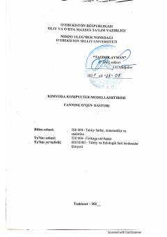

KKKimyo yo'nalishi talabalari uchun kompyuter modellashtirish fani bo'yicha o'quv dasturi.
Ushbu nashr Mirzo Ulug'bek nomidagi O'zbekiston Milliy Universiteti tomonidan tayyorlangan 'Kimyoda kompyuter modellashtirish' fani bo'yicha rasmiy o'quv dasturidir. Unda fanning maqsadi, ma'ruza va amaliy mashg'ulotlar mavzulari hamda kompyuter dasturlari yordamida kimyoviy masalalarni yechish tartibi bayon qilingan. Dastur talabalarda molekulyar modellashtirish va kvant kimyosi bo'yicha amaliy ko'nikmalarni shakllantirishga qaratilgan.